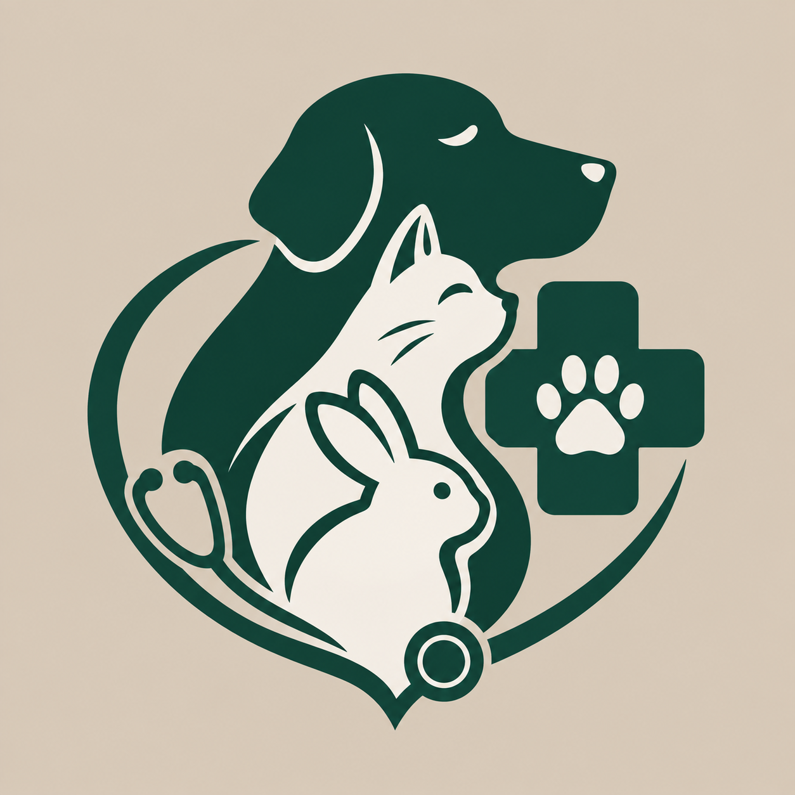
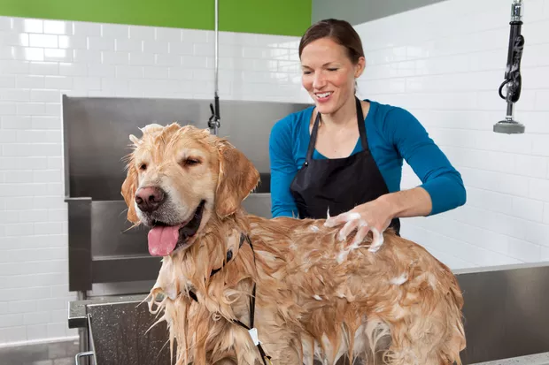
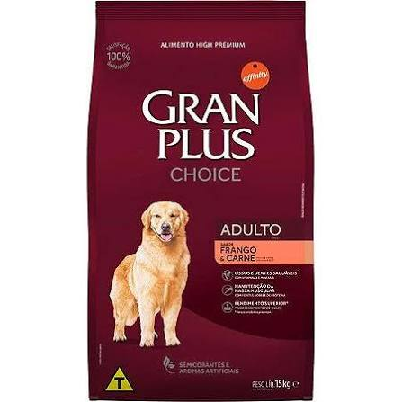
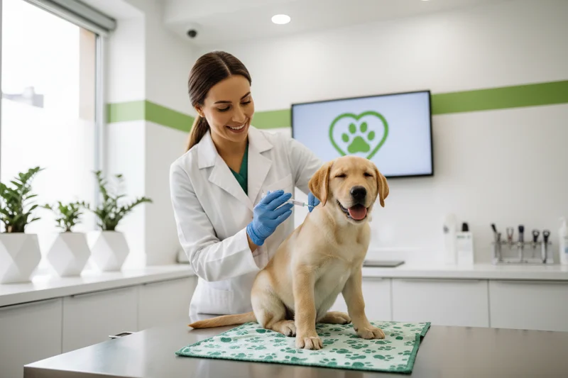

Cuidado, carinho e bem-estar em cada banho para deixar seu pet limpo, saudável e feliz!
R$ 120,00

Alimentação de qualidade para garantir mais saúde, energia e bem-estar em todas as fases da vida do seu pet!
R$ 70,00 kg

Para a segurança do seu pet!
Gratuito durante esse mês